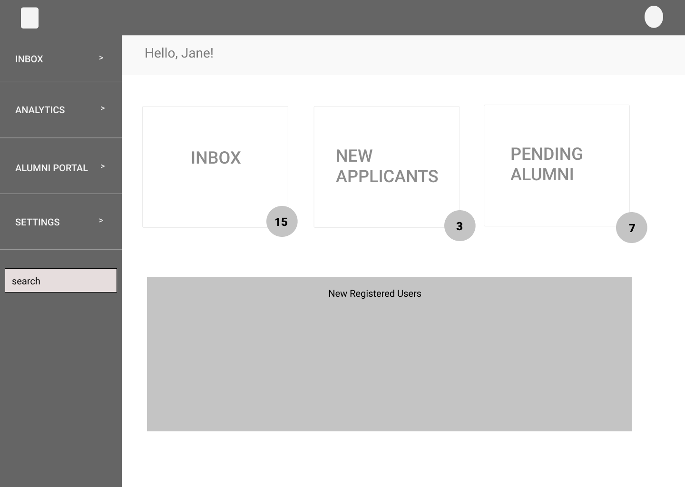

Shop WIBO Staff Dashboard

Overview
About Client
Workshop in Business Opportunities "WIBO" has been around for more than 50+ years and has taught more than 18,000 business owners how to grow a sustainable business through their 16 week program. They have plans to build an e-commerce platform called "Shop WIBO" which will help new and seasoned business owners of the program to sell/promote their product/services on the platform.Duration
2 months (March-May 2019)Team Members
Jane Park, Jamal Combs, Jalena HayMy Role
UX Researcher & Designer
Client briefing
User interviews
Data synthesization
User persona
Competitve analysis
User flow
User testing
Sketching
Wireframing
Prototyping
Project Manager
Schedule team meetings (in-person, remote)
Ideation workshop
Organize tasks & duties amongst teammates
Implement project deadlines and executing them in a timely manner
Problem
WIBO needs to build a staff dashboard to maintain the e-commerce site. The features should include to analyze global sales results, resolve issues and communicate with business owners and customers, and manage product/services pages.Goals and Objectives
Research
User Interviews
The first step on creating the staff dashboard is we conducted 4 user interviews of current WIBO staff members. We wanted to get an understanding of:Key Points
After conducting the interviews, I synthesized the data and this is what I came up with:
90% of the staff are WIBO graduates and have their own business
For the WIBO staff, they would still want an open communication with alumni and further assist the next phase into their careers
WIBO's reputation is their main concern
To view sales, they would like a filter system so they can view more specific analytics and sales
Application process is important, they want specific requirements for applicants who can participate on the platform
Dashboard should be user friendly with very little hidden features
Would like to have very little customer interaction as possible but still be able to monitor any conflicts between business owner and customers
User Persona

Click to view
After synthesizing the data from the interviews, I developed a persona to represent them.
Card Sorting

Click to view
We generated the card sorting method to figure out the organizational structure of the dashboard.
We gathered a small group of participants to organize a list of labels we had into categories.
Visual Design
We researched different designs of dashboards for inspiration. As a group, we collectively designed a dashboard and presented them to each other. We initially had the same idea, but took certain elements from each sketch and made it into one.Sketching

Wireframing

Click to view
The wireframing of the main page of the dashboard. It would mostly be notifications on what they have in store for the day.

Click to view
This is the applications page which showcases what phases of the application process goes through.

{kind=link}
{kind=link}
{kind=link}
{kind=link}
{kind=link}
{kind=link}
User Testing
In our first round of user testings with our medium fidelity prototypes, we had to go through some changes:
In our second round of user testing with our high fidelity prototype, we presented to our clients
and the response was more positive. The only changes they would like to see that would be made was to label the modal when the user go to
review the applications, so they are aware what is expected to be seen.
Take Aways and Improvements
After presenting and conducting few user testings, these are some of the improvements that can be made:
I had a fun experience going through this entire process. I